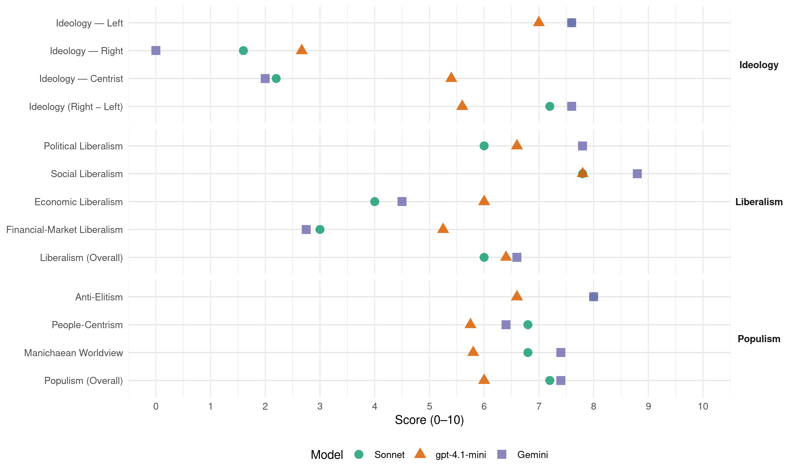

ERC (Spain, 2019)
manifesto_id 33905_201911
Get full text: This site shows derived annotations and short verbatim quotes only. The full manifesto text is © Manifesto Project / WZB — obtain it via manifesto-project.wzb.eu using the manifesto_id above.
Headline scores
| Dimension | Sonnet | gpt-4.1-mini | Gemini |
|---|---|---|---|
| Populism (Overall) | 7.2 | 6.0 | 7.4 |
| Anti-Elitism | 8.0 | 6.6 | 8.0 |
| People-Centrism | 6.8 | 5.8 | 6.4 |
| Manichaean Worldview | 6.8 | 5.8 | 7.4 |
| Ideology (Right − Left) | 7.2 | 5.6 | 7.6 |
| Liberalism (Overall) | 6.0 | 6.4 | 6.6 |
| Political Liberalism | 6.0 | 6.6 | 7.8 |
| Social Liberalism | 7.8 | 7.8 | 8.8 |
| Economic Liberalism | 4.0 | 6.0 | 4.5 |
| Financial-Market Liberalism | 3.0 | 5.2 | 2.8 |
Evidence per dimension
Economic Liberalism
Gemini · score 6.0 · verified · chunk 1
“la lliure competència i l’interès general resten”
La meritocràcia, la igualtat d’oportunitats, la innovació, la lliure competència i l’interès general resten pervertits i segrestats
Gemini · score 3.0 · verified · chunk 2
“limitar el preu màxim del lloguer”
mesures perquè els ajuntaments puguin limitar el preu màxim del lloguer a les zones tensionades.
Gemini · score 6.0 · mixed · chunk 3
“garantint una competència real i que promogui”
situacions de domini de les grans companyies garantint una competència real i que promogui una fiscalitat justa, eficient
Gemini · score 6.0 · verified · chunk 4
“garantir la lliure i lleial competència”
Protegir els drets de les persones consumidores a través d’organismes reguladors per garantir la lliure i lleial competència
Gemini · score 3.0 · verified · chunk 5
“mesures de control de preus del lloguer”
Promoció de canvis legislatius en matèria d’habitatge de lloguer. Mesures de control de preus del lloguer i/o increment de la intervenció administrativa
gpt-4.1-mini · score 6.0 · verified · chunk 1
“foment de la competitivitat i la sostenibilitat, sempre al costat de l’economia productiva i no de l’especulativa”
…principis i valors que inspiren el nostre ideari republicà i de justícia social. Un principis i valors que depenen del foment de la competitivitat i la sostenibilitat, sempre al costat de l’economia productiva i no de l’especulativa. Defensar els interessos de la ciutadania…
gpt-4.1-mini · score 6.0 · verified · chunk 2
“redistribució de la riquesa i de la lluita contra les desigualtats com a pilars”
…una societat cohesionada que garanteixi els mateixos drets i oportunitats a tota la ciutadania… redistribució de la riquesa i de la lluita contra les desigualtats com a pilars de l’estat del benestar…
gpt-4.1-mini · score 7.0 · verified · chunk 3
“implantar una fiscalitat justa i eficient, que garanteixi l’estat del benestar i la funció redistributiva”
UNA REPÚBLICA EMPRENEDORA DE PROSPERITAT COMPARTIDA I FISCALITAT JUSTA La República ha de prendre un protagonisme actiu en l’estímul de l’economia i fer possible la llibertat de la seva ciutadania en la seva dimensió econòmica, aconseguint l’absència de dominació de qualsevol tipus, en especial de les grans corporacions i dels poders econòmics. Només un país pròsper, construït sobre una forta base industrial i innovadora i amb unes institucions eficients i independents dels poders econòmics, pot garantir que el creixement sigui compartit i que s’avanci cap a una societat sense fortes desigualtats i basada en la llibertat i la responsabilitat personal. En aquest àmbit, els pilars fonamentals de la República són els següents: Un estat emprenedor amb un protagonisme actiu en l’economia, que fomenti els nous sectors productius i inverteixi en innovació. Implantar una fiscalitat justa i eficient, que garanteixi l’estat del benestar i la funció redistributiva i que fomenti la competitivitat i prosperitat compartides.
gpt-4.1-mini · score 6.0 · verified · chunk 4
“teixit empresarial competitiu en l’entorn globalitzat”
Un teixit empresarial competitiu en l’entorn globalitzat, invertint en R+D+I, fent les infraestructures necessàries, garantint l’accés al finançament a pimes, creant ecosistemes empresarials innovadors, reduint els costos energètics i impulsant la internacionalització.
gpt-4.1-mini · score 5.0 · verified · chunk 5
“la llei d’avaluació ambiental suposa una important desregulació dels requisits mediambientals”
La llei d’avaluació ambiental suposa una important desregulació dels requisits mediambientals i, per extensió, una lesió a la qualitat de vida de les persones i poblacions afectades. Es retalla el control i la fiscalització per part dels òrgans competents de l’administració en avaluació mediambiental, delegant aquesta funció en òrgans no competents, alhora que es retalla la informació i la participació ciutadana.
Sonnet · score 5.0 · mixed · chunk 1
“foment de la competitivitat i la sostenibilitat”
depenen del foment de la competitivitat i la sostenibilitat, sempre al costat de l’economia productiva i no de l’especulativa
Sonnet · score 4.0 · verified · chunk 2
“sistema fiscal que no és redistributiu”
l’efecte d’un sistema fiscal que no és redistributiu i que trenca el principi de progressivitat, ja que aquesta progressivitat només s’aplica a les rendes del treball
Sonnet · score 5.0 · mixed · chunk 3
“Regular els mercats al servei de l’interès general”
Regular els mercats al servei de l’interès general, amb una política de competència que eviti les situacions de domini (energia, telecomunicacions, etc.).
Sonnet · score 5.0 · mixed · chunk 4
“teixit empresarial competitiu en l’entorn globalitzat”
Un teixit empresarial competitiu en l’entorn globalitzat, invertint en R+D+I, fent les infraestructures necessàries
Sonnet · score 4.0 · verified · chunk 5
“Mesures de control de preus del lloguer”
Mesures de control de preus del lloguer i/o increment de la intervenció administrativa en el mercat del lloguer; diferenciació entre arrendadors grans tenidors i persones físiques
Financial-Market Liberalism
Gemini · score 3.0 · verified · chunk 1
“legislacions a mida de la gran banca i”
inversions fallides com el Castor i les autopistes radials de Madrid i aprova legislacions a mida de la gran banca i dels monopolis
Gemini · score 2.0 · verified · chunk 2
“l’impost sobre els dipòsits bancaris”
Gairebé tots els impostos creats els últims anys han estat a la diana de l’Estat. L’euro per recepta, l’impost sobre els dipòsits bancaris, a les centrals nuclears
Gemini · score 4.0 · mixed · chunk 3
“creació d’una banca pública”
sector, mitjançant mesures com la creació d’una banca pública (que permetria posar fi al problema d’infrafinançament
Gemini · score 4.0 · verified · chunk 4
“Crear una banca pública i un fons”
Crear una banca pública i un fons nacional per a la innovació , a través de la reconversió de l’Institut Català de Finances
Gemini · score 2.0 · verified · chunk 5
“nova llei hipotecària amb topalls a l’endeutament”
Garantia de la dació en pagament i cancel·lació de deutes vinculats a l’habitatge amb una llei de segona oportunitat de tall europeu. Nova llei hipotecària amb topalls a l’endeutament d’acord amb la directiva de la UE
gpt-4.1-mini · score 5.0 · verified · chunk 1
“la despesa militar espanyola supera els 17.000 milions d’euros”
…El tinent Segura ha estat expulsat de l’exèrcit per denunciar corrupció i abusos. La despesa militar espanyola supera els 17.000 milions d’euros (segons els criteris de la mateixa OTAN per calcular la despesa militar). Això significa que l’Estat gasta entre 40 i 50 milions d’euros diaris…
gpt-4.1-mini · score 6.0 · verified · chunk 3
“Impulsar un nou marc regulatori favorable a la innovació en el sector financer”
Impulsar un nou marc regulatori favorable a la innovació en el sector financer. El sector financer a Catalunya està format per unes 450 empreses que ocupen, globalment (no sols a Catalunya), gairebé 100.000 treballadors. A banda dels bancs, el sector assegurador, l’ asset management, la gestió de patrimonis i el capital risc, són alguns dels segments més importants. Catalunya té l’oportunitat d’esdevenir un hub europeu en sistemes de finançament alternatius al bancari a Europa. Aquestes iniciatives no només són clau per tal de reforçar una de les principals “indústries de serveis” del país, sinó per disminuir la dependència del crèdit empresarial de la banca generalista: actualment els cinc primers bancs de l’Estat concentren el 60% del crèdit empresarial. Per tal d’aconseguir-ho es necessita un marc regulatori que afavoreixi la innovació i l’aparició de nous productes i agents.
gpt-4.1-mini · score 6.0 · verified · chunk 4
“crear una banca pública i un fons nacional per a la innovació”
Crear una banca pública i un fons nacional per a la innovació, a través de la reconversió de l’Institut Català de Finances, per assegurar un finançament adequat per a l’economia productiva i facilitar el crèdit a l’emprenedoria i a la innovació.
gpt-4.1-mini · score 4.0 · verified · chunk 5
“l’Estat ha d’indemnitzar l’empresa, participada per Florentino Pérez fent-li efectiu el pagament”
Aquest increment escandalós es deu a un blindatge que assegura la inversió tant si és reeixida com si no, de manera que l’Estat ha d’indemnitzar l’empresa, participada per Florentino Pérez fent-li efectiu el pagament de 1.350 milions a compte d’un crèdit que amb els seus interessos s’incrementarà fins als 4.700.000 euros.
Sonnet · score 3.0 · verified · chunk 1
“legislacions a mida de la gran banca”
un capitalisme d’amiguets que assegura amb recursos públics inversions fallides com el Castor i les autopistes radials de Madrid i aprova legislacions a mida de la gran banca i dels monopolis energètics
Sonnet · score 3.0 · verified · chunk 2
“impost sobre els dipòsits bancaris”
En el cas de l’impost sobre els dipòsits bancaris, els magistrats del TC van considerar que era gairebé idèntic a un impost de valor 0
Sonnet · score 5.0 · mixed · chunk 3
“Separació de la banca comercial minorista”
Separació de la banca comercial minorista (destinada a l’estalvi i al crèdit de les famílies) de la banca d’inversió (destinada a la inversió en productes de mercats cotitzats).
Sonnet · score 4.0 · mixed · chunk 4
“banca pública i un fons nacional per a la innovació”
Crear una banca pública i un fons nacional per a la innovació, a través de la reconversió de l’Institut Català de Finances
Sonnet · score 3.0 · verified · chunk 5
“topalls a l’endeutament d’acord amb la directiva”
Nova llei hipotecària amb topalls a l’endeutament d’acord amb la directiva de la UE i que garanteixi els drets dels consumidors.
Political Liberalism
Gemini · score 8.0 · verified · chunk 1
“preservar la democràcia, garantir la justícia social”
perquè és l’única opció possible per preservar la democràcia, garantir la justícia social, la igualtat d’oportunitats
Gemini · score 8.0 · verified · chunk 2
“garanteixi la plena separació de poders”
amb els quals es garanteixi la plena separació de poders de l’estat de dret.
Gemini · score 7.0 · verified · chunk 3
“pèrdua de democràcia del món del treball”
pèrdua de drets individuals, sinó també per la pèrdua de democràcia del món del treball. El problema de la
Gemini · score 8.0 · verified · chunk 4
“govern obert, transparència, participació ciutadana”
administracions públiques republicanes amb govern obert, transparència, participació ciutadana i democràcia cooperativa.
Gemini · score 8.0 · verified · chunk 5
“transparència, participació ciutadana i democràcia”
Unes administracions públiques republicanes amb govern obert, transparència, participació ciutadana i democràcia cooperativa.
gpt-4.1-mini · score 6.0 · verified · chunk 1
“la democràcia espanyola nascuda el 1978 negava així la legítima legalitat republicana enderrocada pel cop d’estat feixista”
…La democràcia espanyola nascuda el 1978 negava així la legítima legalitat republicana enderrocada pel cop d’estat feixista i sense permetre que la ciutadania decidís en referèndum sobre el model d’estat. A la Constitució del 1978, la figura del rei…
gpt-4.1-mini · score 7.0 · verified · chunk 2
“una justícia independent entesa primordialment com a servei públic”
…una justícia independent entesa primordialment com a servei públic, una concepció de la seguretat integral i no autoritària, una funció pública eficaç i amb voluntat de servei…
gpt-4.1-mini · score 7.0 · verified · chunk 3
“garantirà la qualitat, serà finançat amb recursos públics i estarà orientat a preservar la salut i el benestar de la ciutadania”
UN SISTEMA DE SALUT I SOCIAL INTEGRAT I UNIVERSAL El nou sistema nacional de salut i social de la República estarà centrat en la persona i serà públic, universal, equitatiu i integrat, garantirà la qualitat, serà finançat amb recursos públics i estarà orientat a preservar la salut i el benestar de la ciutadania.
gpt-4.1-mini · score 7.0 · verified · chunk 4
“govern obert, transparència, participació ciutadana”
Unes administracions públiques republicanes amb govern obert, transparència, participació ciutadana i democràcia cooperativa.
gpt-4.1-mini · score 6.0 · verified · chunk 5
“Una administració pública republicana: propera, eficient i transparent”
Una administració simplificada que redueixi a tres els nivells administratius, millori la seva eficiència i clarifiqui el repartiment de les competències a partir del principi de subsidiarietat. En aquest àmbit, els pilars fonamentals de la República són els següents: Unes administracions públiques republicanes amb govern obert, transparència, participació ciutadana i democràcia cooperativa.
Sonnet · score 5.0 · mixed · chunk 1
“democràcia de baixa qualitat, amb inquietants zones d’ombra”
un estat monàrquic i conservador, amb una democràcia de baixa qualitat, amb inquietants zones d’ombra i impunitat en els àmbits judicial, policial i de l’alt funcionariat
Sonnet · score 6.0 · verified · chunk 2
“justícia independent entesa primordialment com a servei públic”
una justícia independent entesa primordialment com a servei públic, una concepció de la seguretat integral i no autoritària
Sonnet · score 6.0 · verified · chunk 3
“independència, la transparència i el retiment de comptes”
Garantia de la independència, la transparència i el retiment de comptes dels organismes reguladors, creant organismes o seccions independents per a cadascun dels mercats
Sonnet · score 5.0 · verified · chunk 4
“qualitat democràtica d’un estat depèn”
La qualitat democràtica d’un estat depèn de la qualitat de les seves institucions.
Sonnet · score 7.0 · verified · chunk 5
“democràcia cooperativa”
Unes administracions públiques republicanes amb govern obert, transparència, participació ciutadana i democràcia cooperativa.
Liberalism (Overall)
Gemini · score 7.0 · verified · chunk 1
“preservar la democràcia, garantir la justícia social”
perquè és l’única opció possible per preservar la democràcia, garantir la justícia social, la igualtat d’oportunitats
Gemini · score 6.0 · verified · chunk 2
“garanteixi la plena separació de poders”
amb els quals es garanteixi la plena separació de poders de l’estat de dret.
Gemini · score 7.0 · verified · chunk 3
“garantint una competència real i que promogui”
situacions de domini de les grans companyies garantint una competència real i que promogui una fiscalitat justa, eficient
Gemini · score 7.0 · verified · chunk 4
“garantir la lliure i lleial competència”
Protegir els drets de les persones consumidores a través d’organismes reguladors per garantir la lliure i lleial competència
Gemini · score 6.0 · verified · chunk 5
“transparència, participació ciutadana i democràcia”
Unes administracions públiques republicanes amb govern obert, transparència, participació ciutadana i democràcia cooperativa.
gpt-4.1-mini · score 6.0 · verified · chunk 1
“principis i valors que inspiren el nostre ideari republicà i de justícia social”
…principis i valors que inspiren el nostre ideari republicà i de justícia social. Un principis i valors que depenen del foment de la competitivitat i la sostenibilitat, sempre al costat de l’economia productiva i no de l’especulativa. Defensar els interessos de la ciutadania…
gpt-4.1-mini · score 7.0 · verified · chunk 2
“una justícia independent entesa primordialment com a servei públic”
…una justícia independent entesa primordialment com a servei públic, una concepció de la seguretat integral i no autoritària, una funció pública eficaç i amb voluntat de servei…
gpt-4.1-mini · score 7.0 · verified · chunk 3
“Implantar una fiscalitat justa i eficient, que garanteixi l’estat del benestar i la funció redistributiva”
UNA REPÚBLICA EMPRENEDORA DE PROSPERITAT COMPARTIDA I FISCALITAT JUSTA La República ha de prendre un protagonisme actiu en l’estímul de l’economia i fer possible la llibertat de la seva ciutadania en la seva dimensió econòmica, aconseguint l’absència de dominació de qualsevol tipus, en especial de les grans corporacions i dels poders econòmics. Només un país pròsper, construït sobre una forta base industrial i innovadora i amb unes institucions eficients i independents dels poders econòmics, pot garantir que el creixement sigui compartit i que s’avanci cap a una societat sense fortes desigualtats i basada en la llibertat i la responsabilitat personal. En aquest àmbit, els pilars fonamentals de la República són els següents: Un estat emprenedor amb un protagonisme actiu en l’economia, que fomenti els nous sectors productius i inverteixi en innovació. Implantar una fiscalitat justa i eficient, que garanteixi l’estat del benestar i la funció redistributiva i que fomenti la competitivitat i prosperitat compartides.
gpt-4.1-mini · score 6.0 · verified · chunk 4
“govern obert, transparència, participació ciutadana”
Unes administracions públiques republicanes amb govern obert, transparència, participació ciutadana i democràcia cooperativa.
gpt-4.1-mini · score 6.0 · verified · chunk 5
“Una administració pública republicana: propera, eficient i transparent”
Una administració simplificada que redueixi a tres els nivells administratius, millori la seva eficiència i clarifiqui el repartiment de les competències a partir del principi de subsidiarietat. En aquest àmbit, els pilars fonamentals de la República són els següents: Unes administracions públiques republicanes amb govern obert, transparència, participació ciutadana i democràcia cooperativa.
Sonnet · score 5.0 · mixed · chunk 1
“drets i les llibertats de la ciutadania”
Ser la millor garantia pel que fa a la defensa dels drets i les llibertats de la ciutadania i esdevenir un autèntic baluard a l’hora de barrar el pas a l’extrema dreta
Sonnet · score 6.0 · verified · chunk 2
“drets i les llibertats democràtiques”
promoure els valors i els principis republicans també en l’àmbit dels drets i les llibertats democràtiques: amb una laïcitat pública respectuosa
Sonnet · score 6.0 · mixed · chunk 3
“protecció dels consumidors en l’àmbit financer”
Aprovació d’un estatut de l’inversor que protegeixi els inversors minoristes i apliqui la normativa europea de protecció dels consumidors en l’àmbit financer (directives MIFID).
Sonnet · score 5.0 · mixed · chunk 4
“lliure elecció i la competència lleial”
garantint la lliure elecció i la competència lleial per evitar les situacions de domini del mercat.
Sonnet · score 6.0 · verified · chunk 5
“govern obert, transparència, participació ciutadana”
Unes administracions públiques republicanes amb govern obert, transparència, participació ciutadana i democràcia cooperativa.
Anti-Elitism
Gemini · score 8.0 · verified · chunk 1
“un règim del 78 caduc i en crisi”
posant el nostre model republicà en contraposició al que ens ofereix un règim del 78 caduc i en crisi. El propòsit
Gemini · score 8.0 · verified · chunk 2
“corrosió i la podridura de les institucions”
posen en evidència la corrosió i la podridura de les institucions i del sistema polític espanyol
Gemini · score 8.0 · verified · chunk 3
“superem una oligarquia extractiva de portes giratòries”
PRECARIETAT O PROSPERITAT SUPEREM UNA OLIGARQUIA EXTRACTIVA DE PORTES GIRATÒRIES Bona part de les elits econòmiques
Gemini · score 8.0 · verified · chunk 4
“desvinculi els grans oligopolis dels poders polítics”
garantir la lliure i lleial competència que eviti les situacions de domini del mercat i desvinculi els grans oligopolis dels poders polítics i de les portes giratòries.
Gemini · score 8.0 · verified · chunk 5
“oligarquies econòmiques del règim del 78”
La base estructural de les polítiques energètiques continua en mans de les oligarquies econòmiques del règim del 78, les quals tenen avui nombroses portes giratòries
gpt-4.1-mini · score 8.0 · verified · chunk 1
“la meritocràcia, la igualtat d’oportunitats, la innovació, la lliure competència i l’interès general resten pervertits i segrestats en mans d’un capitalisme d’amiguets”
…molt allunyats dels interessos de la majoria de la societat. La meritocràcia, la igualtat d’oportunitats, la innovació, la lliure competència i l’interès general resten pervertits i segrestats en mans d’un capitalisme d’amiguets que assegura amb recursos públics inversions fallides com el Castor i les autopistes radials de Madrid i aprova legislacions a mida de la gran banca i dels monopolis energètics. Defensar els drets i les llibertats…
gpt-4.1-mini · score 8.0 · verified · chunk 2
“la corrupció ha esdevingut un dels trets principals del sistema polític”
…la consolidació d’aquesta oligarquia que s’ha lucrat a través dels grans processos de privatitzacions… la corrupció ha esdevingut un dels trets principals del sistema polític posant en escac la mateixa estructura del règim del 78…
gpt-4.1-mini · score 8.0 · verified · chunk 3
“Bona part de les elits econòmiques i empresarials de l’Estat són hereves del franquisme”
PRECARIETAT O PROSPERITAT SUPEREM UNA OLIGARQUIA EXTRACTIVA DE PORTES GIRATÒRIES Bona part de les elits econòmiques i empresarials de l’Estat són hereves del franquisme. L es empreses que van acumular poder i riquesa mitjançant la seva connivència amb la dictadura, avui dia les podem trobar, sense complexos, cotitzant en l’IBEX 35. I unes quantes van fer ús de presos polítics republicans, en condicions de gairebé esclavitud, per enriquir-se i acumular poder.
gpt-4.1-mini · score 2.0 · verified · chunk 4
“corrupció estructural i institucionalitzada”
A l’Estat espanyol existeix una corrupció estructural i institucionalitzada que ha esquitxat les principals institucions de l’Estat. La qualitat democràtica d’un estat depèn de la qualitat de les seves institucions.
gpt-4.1-mini · score 7.0 · verified · chunk 5
“la base estructural de les polítiques energètiques continua en mans de les oligarquies econòmiques del règim del 78”
Les polítiques relacionades amb el medi i els recursos naturals a l’Estat continuen sent erràtiques i variables segons la conjuntura política i econòmica. La base estructural de les polítiques energètiques continua en mans de les oligarquies econòmiques del règim del 78, les quals tenen avui nombroses portes giratòries amb el sistema polític institucional. I les tímides apostes per polítiques mediambientals coherents queden sistemàticament estroncades per alguna raó o altra: els interessos de les grans companyies energètiques o la por a perdre un grapat de vots per implementar mesures correctores, com la retirada del carbó com a font energètica, per exemple.
Sonnet · score 8.0 · verified · chunk 1
“oligopolis diversos i grups de poder mediàtics”
s’aprofiten impúdicament oligopolis diversos i grups de poder mediàtics, funcionarials i policials molt allunyats dels interessos de la majoria de la societat
Sonnet · score 8.0 · verified · chunk 2
“la corrosió i la podridura de les institucions”
posen en evidència la corrosió i la podridura de les institucions i del sistema polític espanyol, així com la utilització dels aparells de l’Estat
Sonnet · score 9.0 · verified · chunk 3
“elits franquistes, lluny de veure disminuït el seu poder”
Així és com les elits franquistes, lluny de veure disminuït el seu poder amb el canvi de règim, el van mutar i consolidar fins al punt que han acabat marcant l’estructura del model econòmic espanyol.
Sonnet · score 8.0 · verified · chunk 4
“elits extractives que el van edificar”
ha desemmascarat les elits extractives que el van edificar. Una xarxa ferroviària ineficient
Sonnet · score 7.0 · verified · chunk 5
“les oligarquies econòmiques del règim del 78”
La base estructural de les polítiques energètiques continua en mans de les oligarquies econòmiques del règim del 78, les quals tenen avui nombroses portes giratòries amb el sistema polític institucional.
Ideology — Centrist
Gemini · score 3.0 · verified · chunk 1
“voluntat democràtica i pacífica de la ciutadania”
bona part de la classe política espanyola davant la voluntat democràtica i pacífica de la ciutadania de construir un futur
Gemini · score 3.0 · verified · chunk 2
“al servei de la ciutadania”
un model de seguretat integral al servei de la ciutadania amb un model de cos
Gemini · score 0.0 · verified · chunk 5
“republicanisme independentista, i d’esquerres”
Així, el republicanisme independentista, i d’esquerres, com a laboratori avançat d’experiències del canvi social
gpt-4.1-mini · score 7.0 · verified · chunk 1
“teixir una gran aliança popular i democràtica per a un acord polític”
…la ciutadania, profundament democràtica i sense la qual no serà possible solucionar el conflicte entre Catalunya i l’Estat. Teixir una gran aliança popular i democràtica per a un acord polític al voltant de l’amnistia, un concepte jurídic internacionalment reconegut…
gpt-4.1-mini · score 5.0 · verified · chunk 2
“la ciutadania es faci corresponsable del progrés social i avanci solidàriament”
…una societat cohesionada que garanteixi els mateixos drets i oportunitats a tota la ciutadania… la ciutadania es faci corresponsable del progrés social i avanci solidàriament cap a una societat més justa i igualitària.
gpt-4.1-mini · score 5.0 · verified · chunk 3
“la ciutadania es faci corresponsable de la seva salut”
UN SISTEMA DE SALUT I SOCIAL INTEGRAT I UNIVERSAL El nou sistema nacional de salut i social de la República estarà centrat en la persona i serà públic, universal, equitatiu i integrat, garantirà la qualitat, serà finançat amb recursos públics i estarà orientat a preservar la salut i el benestar de la ciutadania. Un sistema en què la ciutadania es faci corresponsable de la seva salut, disposi de la màxima informació sobre el diagnòstic propi i tingui la capacitat de prendre decisions de manera compartida sobre el tractament que vol rebre.
gpt-4.1-mini · score 5.0 · verified · chunk 4
“democratitzar l’economia”
Democratitzar l’economia amb l’impuls de l’economia cooperativa de crèdit i de consum i garantint la lliure elecció i la competència lleial per evitar les situacions de domini del mercat.
gpt-4.1-mini · score 5.0 · verified · chunk 5
“fer ciutadania sigui fer república, fer que les persones que vivim juntes siguem tota la ciutadania”
Construir aquest nou sentit de pertinença, compartit per tothom, és una necessitat imprescindible per al benestar, la cohesió i l’equitat. Això vol dir que fer ciutadania sigui fer república, fer que les persones que vivim juntes siguem tota la ciutadania, persones que tenim els mateixos drets i deures, i que estem compromeses amb el bé comú.
Sonnet · score 2.0 · verified · chunk 1
“teixir una gran aliança popular i democràtica”
vol respondre a la sentència liderant el clam de la societat catalana pel reconeixement del dret a l’autodeterminació i per teixir una gran aliança popular i democràtica
Sonnet · score 2.0 · verified · chunk 2
“proposta republicana”
pren tot el sentit la proposta republicana. Una proposta que depèn de promoure els valors i els principis republicans
Sonnet · score 2.0 · verified · chunk 3
“fiscalitat justa, eficient i amb efectes socialment redistributius”
Un estat que eviti les situacions de domini de les grans companyies garantint una competència real i que promogui una fiscalitat justa, eficient i amb efectes socialment redistributius.
Sonnet · score 3.0 · verified · chunk 4
“democratitzi l’economia davant d’oligopolis”
que democratitzi l’economia davant d’oligopolis i grans interessos empresarials
Sonnet · score 2.0 · verified · chunk 5
“administracions públiques transparents, innovadores, participatives”
La República es dotarà d’unes administracions públiques transparents, innovadores, participatives i simplificades al servei de la ciutadania.
Ideology — Left
Gemini · score 7.0 · verified · chunk 1
“interessos de les classes populars i l’economia”
Protegir els interessos de les classes populars els interessos de les classes populars i l’economia innovadora i productiva
Gemini · score 8.0 · verified · chunk 2
“redistribuir la riquesa per donar una”
Una República de benestar que redistribuir la riquesa per donar una vida digna a tothom
Gemini · score 8.0 · verified · chunk 3
“neoliberalisme salvatge practicat pel govern espanyol”
El neoliberalisme salvatge practicat pel govern espanyol va ser clau a l’hora de generar les condicions
Gemini · score 7.0 · verified · chunk 4
“allunyades dels interessos de l’IBEX 35”
serveis financers amb responsabilitat social i mediambiental, allunyades dels interessos de l’IBEX 35, que permetin oferir serveis i productes de consum responsable
Gemini · score 8.0 · verified · chunk 5
“republicanisme independentista, i d’esquerres”
Així, el republicanisme independentista, i d’esquerres, com a laboratori avançat d’experiències del canvi social
gpt-4.1-mini · score 8.0 · verified · chunk 1
“protegir els interessos de les classes populars i l’economia innovadora i productiva des d’uns postulats republicans i partidaris de la justícia social”
…Combatre les desigualtats de gènere i ser inflexibles amb qualsevol manifestació de violència masclista. Les dones han de jugar un paper de primer ordre en la nostra societat i els plantejaments feministes han d’inspirar el conjunt de les polítiques públiques. Protegir els interessos de les classes populars i l’economia innovadora i productiva des d’uns postulats republicans i partidaris de la justícia social. Reforçar el model català de ciutadania…
gpt-4.1-mini · score 8.0 · verified · chunk 2
“redistribució de la riquesa i de la lluita contra les desigualtats com a pilars”
…una societat cohesionada que garanteixi els mateixos drets i oportunitats a tota la ciutadania… redistribució de la riquesa i de la lluita contra les desigualtats com a pilars de l’estat del benestar…
gpt-4.1-mini · score 8.0 · verified · chunk 3
“implantat un règim fiscal que grava més les rendes del treball que les del capital”
L’Estat té un sistema fiscal poc progressiu, en tant que es primen els impostos indirectes, com ara l’IVA, per sobre dels impostos directes, com l’IRPF o l’impost de societats. És a dir, que la pressió fiscal se sustenta més sobre els impostos que paga tota la ciutadania en el consum o les transaccions econòmiques que sobre aquells impostos que s’apliquen a la riquesa de les persones físiques i jurídiques. El sistema tributari espanyol, a més, és un sistema injust perquè les rendes del capital tributen més que les rendes del treball; les empreses innovadores i productives tributen més que les empreses especulatives; els necessaris productes d’higiene íntima femenina, de nadons i de persones dependents no tenen aplicat un IVA reduït; els serveis veterinaris paguen un IVA de luxe mentre que la tauromàquia paga un IVA reduït; o comprar un cotxe de luxe tributa amb el mateix IVA que comprar un tractor o una furgoneta per treballar.
gpt-4.1-mini · score 4.0 · verified · chunk 4
“combatre les desigualtats”
impulsar l’economia del bé comú a través de l’economia social i cooperativa com a motor de transformació cap a un model productiu responsable, sostenible i solidari amb les persones.
gpt-4.1-mini · score 7.0 · verified · chunk 5
“la llei d’estrangeria (LOEX), aprovada l’any 1985 és la causant del racisme institucional”
La llei d’estrangeria (LOEX), aprovada l’any 1985 és la causant del racisme institucional que es reflecteix en accions discriminatòries com l’accés a drets socials: padró, salut, treball, habitatge, educació i l’exercici a la plena ciutadania (el dret a votar). La mateixa llei permet que les persones siguin tractades com a mercaderia d’intercanvi.
Sonnet · score 7.0 · verified · chunk 1
“justícia social, la igualtat d’oportunitats”
la República és la millor eina per garantir la justícia social i la igualtat d’oportunitats al nostre país
Sonnet · score 8.0 · verified · chunk 2
“sistema capitalista devorador que no fa més que incrementar les desigualtats”
cal fer front a un sistema capitalista devorador que no fa més que incrementar les desigualtats socials i especular amb els drets de les persones
Sonnet · score 9.0 · verified · chunk 3
“anti-corporatiu, redistribució, igualtat social”
Un estat que eviti les situacions de domini de les grans companyies garantint una competència real i que promogui una fiscalitat justa, eficient i amb efectes socialment redistributius.
Sonnet · score 7.0 · verified · chunk 4
“oligopoli energètic en què cinc grans companyies”
va donar pas a un oligopoli energètic en què cinc grans companyies acorden el preu.
Sonnet · score 7.0 · verified · chunk 5
“interessos de les grans companyies energètiques”
les tímides apostes per polítiques mediambientals coherents queden sistemàticament estroncades per alguna raó o altra: els interessos de les grans companyies energètiques o la por a perdre un grapat de vots
Ideology (Right − Left)
Gemini · score 7.0 · verified · chunk 1
“interessos de les classes populars i l’economia”
Protegir els interessos de les classes populars els interessos de les classes populars i l’economia innovadora i productiva
Gemini · score 8.0 · verified · chunk 2
“redistribuir la riquesa per donar una”
Una República de benestar que redistribuir la riquesa per donar una vida digna a tothom
Gemini · score 8.0 · verified · chunk 3
“neoliberalisme salvatge practicat pel govern espanyol”
El neoliberalisme salvatge practicat pel govern espanyol va ser clau a l’hora de generar les condicions
Gemini · score 7.0 · verified · chunk 4
“allunyades dels interessos de l’IBEX 35”
serveis financers amb responsabilitat social i mediambiental, allunyades dels interessos de l’IBEX 35, que permetin oferir serveis i productes de consum responsable
Gemini · score 8.0 · verified · chunk 5
“republicanisme independentista, i d’esquerres”
Així, el republicanisme independentista, i d’esquerres, com a laboratori avançat d’experiències del canvi social
gpt-4.1-mini · score 7.0 · verified · chunk 1
“teixir una gran aliança popular i democràtica per a un acord polític”
…la ciutadania, profundament democràtica i sense la qual no serà possible solucionar el conflicte entre Catalunya i l’Estat. Teixir una gran aliança popular i democràtica per a un acord polític al voltant de l’amnistia, un concepte jurídic internacionalment reconegut…
gpt-4.1-mini · score 7.0 · verified · chunk 2
“redistribució de la riquesa i de la lluita contra les desigualtats com a pilars”
…una societat cohesionada que garanteixi els mateixos drets i oportunitats a tota la ciutadania… redistribució de la riquesa i de la lluita contra les desigualtats com a pilars de l’estat del benestar…
gpt-4.1-mini · score 5.0 · verified · chunk 3
“Bona part de les elits econòmiques i empresarials de l’Estat són hereves del franquisme”
PRECARIETAT O PROSPERITAT SUPEREM UNA OLIGARQUIA EXTRACTIVA DE PORTES GIRATÒRIES Bona part de les elits econòmiques i empresarials de l’Estat són hereves del franquisme. L es empreses que van acumular poder i riquesa mitjançant la seva connivència amb la dictadura, avui dia les podem trobar, sense complexos, cotitzant en l’IBEX 35. I unes quantes van fer ús de presos polítics republicans, en condicions de gairebé esclavitud, per enriquir-se i acumular poder.
gpt-4.1-mini · score 4.0 · verified · chunk 4
“combatre les desigualtats”
impulsar l’economia del bé comú a través de l’economia social i cooperativa com a motor de transformació cap a un model productiu responsable, sostenible i solidari amb les persones.
gpt-4.1-mini · score 5.0 · verified · chunk 5
“la base estructural de les polítiques energètiques continua en mans de les oligarquies econòmiques del règim del 78”
Les polítiques relacionades amb el medi i els recursos naturals a l’Estat continuen sent erràtiques i variables segons la conjuntura política i econòmica. La base estructural de les polítiques energètiques continua en mans de les oligarquies econòmiques del règim del 78, les quals tenen avui nombroses portes giratòries amb el sistema polític institucional.
Sonnet · score 7.0 · verified · chunk 1
“capitalisme d’amiguets que assegura amb recursos públics”
un capitalisme d’amiguets que assegura amb recursos públics inversions fallides com el Castor i les autopistes radials de Madrid i aprova legislacions a mida de la gran banca
Sonnet · score 8.0 · verified · chunk 2
“anti-corporativa, redistribució, igualtat social”
sistema capitalista devorador que no fa més que incrementar les desigualtats socials i especular amb els drets de les persones, com el dret a l’habitatge
Sonnet · score 8.0 · verified · chunk 3
“sistema financer especulador que s’ha beneficiat de la crisi”
d’un sistema financer especulador que s’ha beneficiat de la crisi que ell mateix va generar, d’unes grans empreses de l’IBEX 35 que reben tractes de favor
Sonnet · score 7.0 · verified · chunk 4
“contrapoder de les grans corporacions i del sistema econòmic”
sindicalisme nacional i de classe com a contrapoder de les grans corporacions i del sistema econòmic del gran capital
Sonnet · score 6.0 · verified · chunk 5
“republicanisme independentista, i d’esquerres”
Així, el republicanisme independentista, i d’esquerres, com a laboratori avançat d’experiències del canvi social i polític
Ideology — Right
Gemini · score 0.0 · verified · chunk 1
“superar els vells esquemes de nacionalisme autoritari”
respectuós amb els sentiments de pertinença de tothom. Cal superar els vells esquemes de nacionalisme autoritari i fortament identitari
Gemini · score 0.0 · verified · chunk 2
“davant l’avanç de l’extrema dreta”
Davant l’avanç de l’extrema dreta arreu d’Europa, amb un discurs que incita a l’odi
Gemini · score 0.0 · verified · chunk 5
“combatre totes les ideologies de l’odi”
Fer ciutadania, fer república, vol dir respectar i valorar la diversitat i combatre totes les ideologies de l’odi.
gpt-4.1-mini · score 3.0 · verified · chunk 1
“baluard a l’hora de barrar el pas a l’extrema dreta”
…Ser la millor garantia pel que fa a la defensa dels drets i les llibertats de la ciutadania i esdevenir un autèntic baluard a l’hora de barrar el pas a l’extrema dreta. Promoure els valors republicans, la transparència i el retiment de comptes enfront d’un estat monàrquic i conservador…
gpt-4.1-mini · score 2.0 · verified · chunk 2
“discurs que incita a l’odi contra la diferència i promou valors com el masclisme, el racisme i l’homofòbia”
Davant l’avanç de l’extrema dreta arreu d’Europa, amb un discurs que incita a l’odi contra la diferència i promou valors com el masclisme, el racisme i l’homofòbia, cal reafirmar el compromís de treballar en la defensa dels drets i les llibertats…
gpt-4.1-mini · score 3.0 · verified · chunk 5
“la Constitució estableix com a única nació l’espanyola i el castellà com a única llengua oficial de l’Estat”
El reconeixement de l’Espanya plurinacional, pluricultural i plurilingüística continua sent la gran assignatura pendent de l’Estat. Espanya pretén ser una realitat nacional inexorable i immutable, però la història s’encarrega de desmentir aquesta rígida visió determinista una vegada rere una altra. És un concepte unitarista que per afirmar-se com a estat nació necessita negar tots els països i nacions que componen l’Estat. La Constitució estableix com a única nació l’espanyola i el castellà com a única llengua oficial de l’Estat.
Sonnet · score 2.0 · verified · chunk 1
“Reforçar el model català de ciutadania, obert”
Reforçar el model català de ciutadania, obert a gent de totes les procedències i respectuós amb els sentiments de pertinença de tothom
Sonnet · score 1.0 · verified · chunk 2
“avanç de l’extrema dreta arreu d’Europa”
Davant l’avanç de l’extrema dreta arreu d’Europa, amb un discurs que incita a l’odi contra la diferència i promou valors com el masclisme
Sonnet · score 1.0 · verified · chunk 3
“persones migrades, el col·lectiu LGTBI”
Garantia de no-discriminació i lluita contra qualsevol forma de violència… especialment la que s’exerceix contra dones, infants, persones migrades, el col·lectiu LGTBI
Sonnet · score 2.0 · verified · chunk 4
“identificant-les amb una imatge de qualitat diferenciada”
rellançant les empreses catalanes identificant-les amb una imatge de qualitat diferenciada, a través de les oficines a l’exterior i la creació de la marca Made in Catalonia.
Sonnet · score 2.0 · verified · chunk 5
“Regulació dels fluxos migratoris”
Regulació dels fluxos migratoris des d’una perspectiva real i objectiva de les causes de les migracions per a la bona gestió de les entrades i sortides.
Manichaean Worldview
Gemini · score 8.0 · verified · chunk 1
“un clima de revenja i demagògia reaccionària”
eleccions del 10-N s’inscriuen en un context marcat per la crisi institucional del règim del 78 i per un clima de revenja i demagògia reaccionària en relació amb
Gemini · score 8.0 · verified · chunk 2
“operació de conspiració i males pràctiques”
Daniel de Alfonso, que provaven l’existència d’una operació de conspiració i males pràctiques per silenciar
Gemini · score 7.0 · verified · chunk 3
“el règim fiscal afavoreix els poderosos”
tenim davant un Estat on el règim fiscal afavoreix els poderosos i on s’acaben gravant més les rendes
Gemini · score 7.0 · verified · chunk 4
“interessos d’uns pocs que no en un sistema racional”
És per tant un model territorial molt més basat en l’interès d’uns pocs que no en un sistema racional que beneficiï la majoria.
Gemini · score 7.0 · verified · chunk 5
“forces reaccionàries volen construir un model”
Aquestes forces reaccionàries volen construir un model educatiu que separi els alumnes per raó de llengua
gpt-4.1-mini · score 8.0 · verified · chunk 1
“la sentència injusta i injustificable contra l’independentisme i denunciar la repressió”
…Compromís amb la llibertat: Rebutjar la sentència injusta i injustificable contra l’independentisme i denunciar la repressió en totes les seves formes. Defensar el dret de la ciutadania de Catalunya a exercir el dret a l’autodeterminació…
gpt-4.1-mini · score 7.0 · verified · chunk 2
“la corrupció ha esdevingut un dels trets principals del sistema polític posant en escac”
…la consolidació d’aquesta oligarquia que s’ha lucrat a través dels grans processos de privatitzacions… la corrupció ha esdevingut un dels trets principals del sistema polític posant en escac la mateixa estructura del règim del 78 i desemmascarant les elits extractives que el van edificar.
gpt-4.1-mini · score 6.0 · verified · chunk 3
“els poders econòmics, i aquest estat de coses s’ha traduït en l’existència d’un sistema financer especulador”
L’economia productiva catalana, doncs, i molt en particular les classes mitjanes i treballadores del país, han pagat històricament un preu molt alt pel fet de no comptar amb un Estat que hagi assumit com a pròpia la defensa dels seus interessos i necessitats. I això, amb la crisi dels darrers anys, que tot just es comença a superar ara, s’ha fet encara més palès. La República Catalana és la gran oportunitat que tenim per capgirar la situació. És l’oportunitat per disposar d’un estat emprenedor que faci una aposta decidida per l’economia productiva, social, sostenible i innovadora, que tingui com a prioritat el suport a la petita i mitjana empresa i al treball autònom i la finalitat de crear una ocupació digna i ben qualificada. Un estat que eviti les situacions de domini de les grans companyies garantint una competència real i que promogui una fiscalitat justa, eficient i amb efectes socialment redistributius. Una estat, en definitiva, que generi prosperitat.
gpt-4.1-mini · score 3.0 · verified · chunk 4
“autèntiques estafes i agressions als interessos generals”
ha condicionat la relació del sistema polític amb els poders econòmics conformant relacions de poder que han suposat autèntiques estafes i agressions als interessos generals en benefici d’aquestes elits.
gpt-4.1-mini · score 5.0 · verified · chunk 5
“l’Estat no és neutral ni imparcial pel que fa a la cultura i a la identitat de la seva ciutadania”
La construcció de la identitat nacional espanyola s’ha fet a partir de la cultura i la llengua d’una de les parts, la castellana, que s’ha anat imposant al llarg de la història per damunt de les altres amb una clara intenció d’assimilació cultural. L’Estat no és neutral ni imparcial pel que fa a la cultura i a la identitat de la seva ciutadania. En el pla cultural i lingüístic, les elits i oligarquies que controlen l’aparell administratiu i el repartiment dels recursos estan plenament compromeses amb una identitat nacional de matriu castellana.
Sonnet · score 7.0 · verified · chunk 1
“No es tracta de justícia, sinó de venjança”
Amb la condemna dels presos polítics l’Estat espanyol ha escrit la seva pròpia sentència. No es tracta de justícia, sinó de venjança. No és busca una solució, sinó l’escarment.
Sonnet · score 7.0 · verified · chunk 2
“les elits extractives que el van edificar”
desemmascarant les elits extractives que el van edificar. Una forma de corrupció institucionalitzada que s’ha plasmat en les portes giratòries
Sonnet · score 8.0 · verified · chunk 3
“oligarquia extractiva de portes giratòries”
PRECARIETAT O PROSPERITAT SUPEREM UNA OLIGARQUIA EXTRACTIVA DE PORTES GIRATÒRIES — framing of corrupt elites vs. the people
Sonnet · score 7.0 · verified · chunk 4
“corrupció estructural i institucionalitzada”
A l’Estat espanyol existeix una corrupció estructural i institucionalitzada que ha esquitxat les principals institucions de l’Estat.
Sonnet · score 5.0 · verified · chunk 5
“respon més als interessos econòmics de Florentino Pérez”
sembla que el projecte, una vegada més, respon més als interessos econòmics de Florentino Pérez que a l’interès general.
People-Centrism
Gemini · score 7.0 · verified · chunk 1
“voluntat democràtica i pacífica de la ciutadania”
bona part de la classe política espanyola davant la voluntat democràtica i pacífica de la ciutadania de construir un futur
Gemini · score 7.0 · verified · chunk 2
“al servei de la ciutadania”
un model de seguretat integral al servei de la ciutadania amb un model de cos policial
Gemini · score 5.0 · verified · chunk 3
“millora del benestar de les persones”
Reforma horària per a la millora del benestar de les persones i de les famílies, redistribuint els usos
Gemini · score 6.0 · verified · chunk 4
“situï la ciutadania al centre del cercle”
Un model que situï la ciutadania al centre del cercle de la innovació.
Gemini · score 7.0 · verified · chunk 5
“compromeses amb el bé comú”
membres d’un sol poble. Divers, certament, però amb voluntat de ser un sol poble. … compromeses amb el bé comú.
gpt-4.1-mini · score 7.0 · verified · chunk 1
“teixir una gran aliança popular i democràtica per a un acord polític”
…la ciutadania, profundament democràtica i sense la qual no serà possible solucionar el conflicte entre Catalunya i l’Estat. Teixir una gran aliança popular i democràtica per a un acord polític al voltant de l’amnistia, un concepte jurídic internacionalment reconegut…
gpt-4.1-mini · score 7.0 · verified · chunk 2
“la ciutadania es faci corresponsable del progrés social”
…una societat cohesionada que garanteixi els mateixos drets i oportunitats a tota la ciutadania… la ciutadania es faci corresponsable del progrés social i avanci solidàriament cap a una societat més justa i igualitària.
gpt-4.1-mini · score 3.0 · verified · chunk 3
“la ciutadania es faci corresponsable de la seva salut”
UN SISTEMA DE SALUT I SOCIAL INTEGRAT I UNIVERSAL El nou sistema nacional de salut i social de la República estarà centrat en la persona i serà públic, universal, equitatiu i integrat, garantirà la qualitat, serà finançat amb recursos públics i estarà orientat a preservar la salut i el benestar de la ciutadania. Un sistema en què la ciutadania es faci corresponsable de la seva salut, disposi de la màxima informació sobre el diagnòstic propi i tingui la capacitat de prendre decisions de manera compartida sobre el tractament que vol rebre.
gpt-4.1-mini · score 6.0 · verified · chunk 5
“fer que les persones que vivim juntes siguem tota la ciutadania, persones que tenim els mateixos drets i deures”
Construir aquest nou sentit de pertinença, compartit per tothom, és una necessitat imprescindible per al benestar, la cohesió i l’equitat. Això vol dir que fer ciutadania sigui fer república, fer que les persones que vivim juntes siguem tota la ciutadania, persones que tenim els mateixos drets i deures, i que estem compromeses amb el bé comú. Fer ciutadania, fer república, vol dir respectar i valorar la diversitat i combatre totes les ideologies de l’odi.
Sonnet · score 8.0 · verified · chunk 1
“la voluntat democràtica i pacífica de la ciutadania”
davant la voluntat democràtica i pacífica de la ciutadania de construir un futur ple d’oportunitats
Sonnet · score 7.0 · verified · chunk 2
“garanteixi els mateixos drets i oportunitats a tota la ciutadania”
una societat cohesionada que garanteixi els mateixos drets i oportunitats a tota la ciutadania. Una República de benestar que redistribueixi la riquesa
Sonnet · score 7.0 · verified · chunk 3
“tota la societat hem hagut de pagar la factura”
Així, tota la societat hem hagut de pagar la factura del seu deute, mentre ells mantenien sous, beneficis i privilegis
Sonnet · score 6.0 · verified · chunk 4
“model que situï la ciutadania al centre”
Un model que situï la ciutadania al centre del cercle de la innovació.
Sonnet · score 6.0 · verified · chunk 5
“som un sol poble davant les envestides de l’Estat”
La convicció de que som un sol poble davant les envestides de l’Estat. Un altre dels elements de preocupació de les estructures de poder davant l’èxit del model educatiu català
Populism (Overall)
Gemini · score 8.0 · verified · chunk 1
“un règim del 78 caduc i en crisi”
posant el nostre model republicà en contraposició al que ens ofereix un règim del 78 caduc i en crisi. El propòsit
Gemini · score 8.0 · verified · chunk 2
“corrosió i la podridura de les institucions”
posen en evidència la corrosió i la podridura de les institucions i del sistema polític espanyol
Gemini · score 7.0 · verified · chunk 3
“superem una oligarquia extractiva de portes giratòries”
PRECARIETAT O PROSPERITAT SUPEREM UNA OLIGARQUIA EXTRACTIVA DE PORTES GIRATÒRIES Bona part de les elits econòmiques
Gemini · score 7.0 · verified · chunk 4
“desvinculi els grans oligopolis dels poders polítics”
garantir la lliure i lleial competència que eviti les situacions de domini del mercat i desvinculi els grans oligopolis dels poders polítics i de les portes giratòries.
Gemini · score 7.0 · verified · chunk 5
“oligarquies econòmiques del règim del 78”
La base estructural de les polítiques energètiques continua en mans de les oligarquies econòmiques del règim del 78, les quals tenen avui nombroses portes giratòries
gpt-4.1-mini · score 8.0 · verified · chunk 1
“la sentència injusta i injustificable contra l’independentisme i denunciar la repressió”
…Compromís amb la llibertat: Rebutjar la sentència injusta i injustificable contra l’independentisme i denunciar la repressió en totes les seves formes. Defensar el dret de la ciutadania de Catalunya a exercir el dret a l’autodeterminació…
gpt-4.1-mini · score 7.0 · verified · chunk 2
“la corrupció ha esdevingut un dels trets principals del sistema polític”
…la consolidació d’aquesta oligarquia que s’ha lucrat a través dels grans processos de privatitzacions… la corrupció ha esdevingut un dels trets principals del sistema polític posant en escac la mateixa estructura del règim del 78…
gpt-4.1-mini · score 6.0 · verified · chunk 3
“Bona part de les elits econòmiques i empresarials de l’Estat són hereves del franquisme”
PRECARIETAT O PROSPERITAT SUPEREM UNA OLIGARQUIA EXTRACTIVA DE PORTES GIRATÒRIES Bona part de les elits econòmiques i empresarials de l’Estat són hereves del franquisme. L es empreses que van acumular poder i riquesa mitjançant la seva connivència amb la dictadura, avui dia les podem trobar, sense complexos, cotitzant en l’IBEX 35. I unes quantes van fer ús de presos polítics republicans, en condicions de gairebé esclavitud, per enriquir-se i acumular poder.
gpt-4.1-mini · score 3.0 · verified · chunk 4
“corrupció estructural i institucionalitzada”
A l’Estat espanyol existeix una corrupció estructural i institucionalitzada que ha esquitxat les principals institucions de l’Estat. La qualitat democràtica d’un estat depèn de la qualitat de les seves institucions.
gpt-4.1-mini · score 6.0 · verified · chunk 5
“la base estructural de les polítiques energètiques continua en mans de les oligarquies econòmiques del règim del 78”
Les polítiques relacionades amb el medi i els recursos naturals a l’Estat continuen sent erràtiques i variables segons la conjuntura política i econòmica. La base estructural de les polítiques energètiques continua en mans de les oligarquies econòmiques del règim del 78, les quals tenen avui nombroses portes giratòries amb el sistema polític institucional. I les tímides apostes per polítiques mediambientals coherents queden sistemàticament estroncades per alguna raó o altra: els interessos de les grans companyies energètiques o la por a perdre un grapat de vots per implementar mesures correctores, com la retirada del carbó com a font energètica, per exemple.
Sonnet · score 8.0 · verified · chunk 1
“règim del 78 caduc i en crisi”
el nostre model republicà en contraposició al que ens ofereix un règim del 78 caduc i en crisi
Sonnet · score 7.0 · verified · chunk 2
“oligarquia franquista continuar dirigint el país”
va permetre a l’oligarquia franquista continuar dirigint el país, i perpetuar-se en els estaments del poder
Sonnet · score 8.0 · verified · chunk 3
“Bona part de les elits econòmiques i empresarials”
Bona part de les elits econòmiques i empresarials de l’Estat són hereves del franquisme. Les empreses que van acumular poder i riquesa mitjançant la seva connivència amb la dictadura
Sonnet · score 7.0 · verified · chunk 4
“interessos d’uns pocs que no en un sistema racional”
És per tant un model territorial molt més basat en l’interès d’uns pocs que no en un sistema racional que beneficiï la majoria.
Sonnet · score 6.0 · verified · chunk 5
“al marge dels interessos d’una oligarquia”
La República Catalana és, doncs, l’única oportunitat que tenim per avançar cap a un futur sostenible… on disposem d’una administració pública eficient i transparent al marge dels interessos d’una oligarquia
Social Liberalism